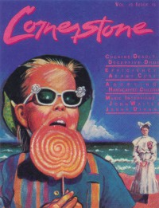

<!DOCTYPE PUBLIC "-//W3C//DTD XHTML 1.0 Transitional//EN" "http://www.w3.org/TR/1/DTD/1-transitional.dtd">
 xmlns="http://www.w3.org/1999/" xml:lang="en" lang="en">

<head>
<meta http-equiv="Content-Type" content="text; charset=utf-8" />
<title>Cornerstone, 1985, volume 15, issue 78 :: CMnexus</title><link rel="stylesheet" href="../../../articles.css" type="text/css" title="CMnexus" /><meta name="viewport" content="width=device-width" /><meta name="title" content="Cornerstone, 1985, volume 15, issue 78 :: CMnexus" /><meta name="color-scheme" content="light dark" /><meta name="description" content="Index of Cornerstone, 1985, vol. 15, iss. 78 The CMnexus is a magazine index covering Christianity and music." /><meta name="theme-color" content="#669966" /><meta name="theme-color" content="#25282a" media="(prefers-color-scheme:dark)" /><meta name="keywords" content="Cornerstone, 0275-2743, Jessy Dixon, John Waite" /><link rel="canonical" href="page6" /><link rel="image_src" href="../../../images/covers/CSTON1985__pr20.jpg" /><link rel="help" href="../../../about/" /><link rel="home" href="../../../" /><link href="page5" rel="prev" /><link href="page7" rel="next" /><link rel="up index" href="../issues" /> 
<script type="application/ld+json">{"@context":"http:\/\/schema.org","@type":"Periodical","name":"Cornerstone","hasPart":[{"@type":"ImageObject","contentUrl":"http:\/\/cmnexus.org\/images\/covers\/CSTON1985__pr20.jpg","caption":"Cover of Cornerstone, 1985 v. 15, i. 78","representativeOfPage":true,"datePublished":"1985"}],"isFamilyFriendly":true,"issn":"0275-2743","image":[{"@type":"ImageObject","contentUrl":"http:\/\/cmnexus.org\/images\/covers\/CSTON1985__pr20.jpg","caption":"Cover of Cornerstone, 1985 v. 15, i. 78","representativeOfPage":true}]}</script>
<link rel="apple-touch-icon" type="image/png" href="../../../apple-touch-icon.png" />
</head>
<body bgcolor="#000067" text="#000000" link="#000066" vlink="#000066" alink="#660000" itemscope itemtype="http://schema.org/WebPage">
<table bgcolor="#FFFFFF" width="100%" cellspacing="0" cellpadding="8" class="p100pc" id="maintable">
<tr valign="top" class="">
<td bgcolor="#669966" colspan="2" class="navcolor noprint p0tnytny navtop" style="padding-bottom:0px" itemscope itemtype="http://schema.org/SiteNavigationElement">
<div  id="pagehead" class="tnytnytnyonlyin">
<b><a href="../../../"
title="CMnexus" border="0" class="img" align="center">CMnexus</a></b>
<span class="smalltnytny tnytnytnyonlyoff">: <i>Contemporary Christian culture, music, and media.</i></span>
</div>
<ul class="navbar nodisc din" style="padding-top:.5em;">
<li class="pr2em din mainnav" ><a title="Browse magazines" href="../../">Magazines</a></li>
<li class="pr2em din mainnav" ><a title="Browse artists &amp; authors" href="../../../profiles/">Profiles</a></li>
<li class="din mainnav" ><a title="GMA Dove Award nominees and winner listings" href="../../../awards/Dove_Awards">Dove Awards</a></li>

</ul>

</td>
</tr>
<tr valign="top" class="vaT">
<td class="vaT" id="cocol" width="*">
<div class="vaT flL b600" itemprop="breadcrumb"><span class="printonly">cmnexus.org</span><a class="noprint tnytnyonlyoff" href="../../../" title="Front page of the CMnexus" itemprop="url"><span class="tdn">CM</span>nexus</a><span class="tnytnyonlyoff"> &rarr; </span><a href="../../" title="Browse all magazines" rel="up up up" itemprop="url"><span itemprop="name">Magazine list</span></a> &rarr; <a href="../../Cornerstone" class="magazine"title="Information about Cornerstone" rel="up up" itemprop="url"><span itemprop="name">Cornerstone</span></a> &rarr; <a href="../issues" class="" title="Issues of Cornerstone by year" rel="up" itemprop="url"><span itemprop="name">Issues</span></a></div><h1 class="sectiontitle clB mb0"><span class="magazine">Cornerstone</span></h1><h2  align="center" class="fsxl allsmcap wsnw mt0 mb0">1985, vol. 15, iss. 78</h2><table align="center" class="internalnav noprint clB usn"><tr><td class="b600 flC" align="center">
<a href="page5" title="Earlier issue of Cornerstone" rel="prev">&lt; -- Prev</a>&nbsp;&nbsp;&nbsp;&nbsp;&nbsp;&nbsp;&nbsp;&nbsp;<a href="../issues#y1985" class="" title="Issues of Cornerstone by year">Issue list</a>&nbsp;&nbsp;&nbsp;&nbsp;&nbsp;&nbsp;&nbsp;&nbsp;<a href="page7" title="Later issue of Cornerstone" rel="next">Next -- &gt;</a></td></tr>
</table>
<div class="m600px m0px" itemscope itemtype="http://schema.org/CreativeWork/Periodical"><meta itemprop="name" content="Cornerstone" /><div itemscope itemtype="http://schema.org/CreativeWork/Periodical/Issue" style="margin-top:-1px;"><table class="flR clB flNtnytny" style="min-width:200px;margin:20px;margin-right:0px;margin-top:5px;"><tr><th class="smcap">Cover</th></tr><tr><td></td></tr><tr><th class="smcap" style="margin-top:25px;">Writers in this Issue</th></tr><tr><td ><a href="../../../profiles/Chris_Bajkiewicz/writing/page1" class="profile"  title="Profile of Chris Bajkiewicz - writing/page1 view">Bajkiewicz, Chris</a><br /><a href="../../../profiles/Mike_Hertenstein/writing/page1" class="profile"  title="Profile of Mike Hertenstein - writing/page1 view">Hertenstein, Mike</a><br /><a href="../../../profiles/Chris_Ramsey/writing/page1" class="profile"  title="Profile of Chris Ramsey - writing/page1 view">Ramsey, Chris</a><br /><a href="../../../profiles/Jon_Trott/writing/page2" class="profile"  title="Profile of Jon Trott - writing/page2 view">Trott, Jon</a><br /></td></tr></table><h2 align="center" class="mb1pr mt25pcempr"></h2><meta itemprop="datePublished" content="1985" /><b>Article:</b><ul class="lulm">
<li>"Lazy Musicians Make Lackluster Lyrics" by Jon Trott</li>
</ul><b>Interview:</b><ul class="lulm">
<li><a href="../../../profiles/Jessy_Dixon" class="profile"  title="Profile of Jessy Dixon">Jessy Dixon</a> by Chris Ramsey</li>
<li><a href="../../../profiles/John_Waite" class="profile"  title="Profile of John Waite">John Waite</a> by Chris Ramsey</li>
</ul><b>Album Review:</b><ul class="lulm">
<li><a href="../../../profiles/Undercover" class="profile"  title="Profile of Undercover">Undercover</a> - <span class="album" title="The album 'Branded' is by Undercover">Branded</span> by Jon Trott</li>
<li><a href="../../../profiles/The_Call" class="profile"  title="Profile of The Call">The Call</a> - <span class="album" title="The album 'Reconciled' is by The Call">Reconciled</span> by Jon Trott</li>
<li><a href="../../../profiles/Sandra_Crouch" class="profile"  title="Profile of Sandra Crouch">Sandra Crouch</a> - <span class="album" title="The album 'We're Waiting' is by Sandra Crouch">We're Waiting</span> by Jon Trott</li>
<li>various artists - <span class="album" title="The album 'Fight The System' is by various artists">Fight The System</span> by Jon Trott</li>
<li><a href="../../../profiles/Barren_Cross" class="profile"  title="Profile of Barren Cross">Barren Cross</a> - <span class="album" title="The album 'Rock for the King' is by Barren Cross">Rock for the King</span> by Jon Trott</li>
<li><a href="../../../profiles/Adam_Again" class="profile"  title="Profile of Adam Again">Adam Again</a> - <span class="album" title="The album 'In a New World of Time' is by Adam Again">In a New World of Time</span> by Jon Trott</li>
<li><a href="../../../profiles/Eternal_Vision" class="profile"  title="Profile of Eternal Vision">Eternal Vision</a> - <span class="album" title="The album 'Special Deliverance' is by Eternal Vision">Special Deliverance</span> by Mike Hertenstein</li>
<li><a href="../../../profiles/Rich_Mullins" class="profile"  title="Profile of Rich Mullins">Rich Mullins</a> - <span class="album" title="The album 'Rich Mullins' is by Rich Mullins">Rich Mullins</span> by Chris Bajkiewicz</li>
</ul><b>78 RPM:</b><ul class="lulm">
<li><a href="../../../profiles/Steve_and_Annie_Chapman" class="profile"  title="Profile of Steve and Annie Chapman">Steve and Annie Chapman</a> - <span class="album" title="The album 'Time and Seasons' is by Steve and Annie Chapman">Time and Seasons</span></li>
<li><a href="../../../profiles/Johnny_J._Blair" class="profile"  title="Profile of Johnny J. Blair">Johnny J. Blair</a> - <span class="album" title="The album 'Door in the Water' is by Johnny J. Blair">Door in the Water</span></li>
<li><a href="../../../profiles/Michael_Peterson" class="profile"  title="Profile of Michael Peterson">Michael Peterson</a> - <span class="album" title="The album 'Michael Peterson' is by Michael Peterson">Michael Peterson</span></li>
<li><a href="../../../profiles/Geoff_Moore" class="profile"  title="Profile of Geoff Moore">Geoff Moore</a> - <span class="album" title="The album 'Over the Edge' is by Geoff Moore">Over the Edge</span></li>
<li><a href="../../../profiles/Michael_Card" class="profile"  title="Profile of Michael Card">Michael Card</a> - <span class="album" title="The album 'Scandalon' is by Michael Card">Scandalon</span></li>
<li><a href="../../../profiles/Glenn_Allen_Green" class="profile"  title="Profile of Glenn Allen Green">Glenn Allen Green</a> - <span class="album" title="The album 'A Living Fire' is by Glenn Allen Green">A Living Fire</span></li>
</ul><br class="noprint" /><div class="clB"><h2 class="mb1pr mt25pcempr">Relevant Links</h2><a title="Official web site of Cornerstone" href="http://www.cornerstonemag.com/" class="printel" rel="external">Official web site of Cornerstone</a><br /><br/><div>You may be able to find <i class="magazine ">Cornerstone</i> in a library near you: <a class="printel" rel="nofollow" href="http://www.worldcat.org/oclc/7106672" title="External link: Information from Worldcat about Cornerstone"><span class="noprint">check </span>Worldcat</a></div></div><br /></div></div><table align="center" class="internalnav noprint clB usn"><tr><td class="b600 flC" align="center">
<a href="page5" title="Earlier issue of Cornerstone" rel="prev">&lt; -- Prev</a>&nbsp;&nbsp;&nbsp;&nbsp;&nbsp;&nbsp;&nbsp;&nbsp;<a href="../issues#y1985" class="" title="Issues of Cornerstone by year">Issue list</a>&nbsp;&nbsp;&nbsp;&nbsp;&nbsp;&nbsp;&nbsp;&nbsp;<a href="page7" title="Later issue of Cornerstone" rel="next">Next -- &gt;</a></td></tr>
</table>
</td><td class="noprint lineC" style="min-width:150px;" width="150px" itemscope itemtype="http://schema.org/WPSideBar" id="rsidebar"><div><b>CMnexus</b> <i>(noun)</i><br />The magazine index<br />of modern music<br />and Christianity<br /></div></td></tr><tr class="smalltnytny" itemscope itemtype="http://schema.org/WPFooter"><td id="footer" class="navcolor pbnw" colspan="2"><div class="lineC">&copy; 2011 CMnexus. Last updated May 2025.<span class="printonly"> Contact: </span> <span class="noprint"> Rants and other correspondence to: </span> <!--BL-->editor -AT- cmnexus<span class="noshow"><!--BL--></span> -D&Oslash;T- org <a title="About the Nexus, general information" href="../../../about/" class="noprint">About</a></div></td></tr></table></body><>